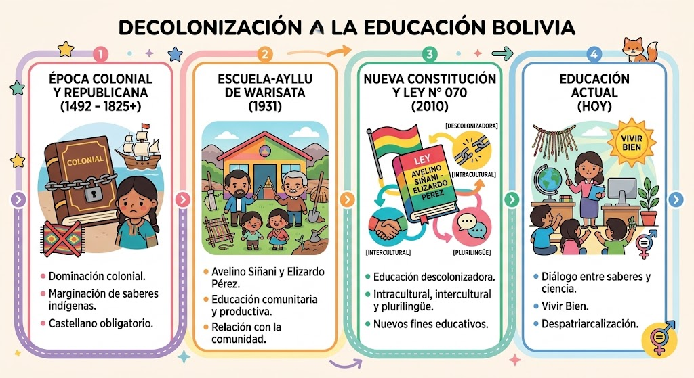
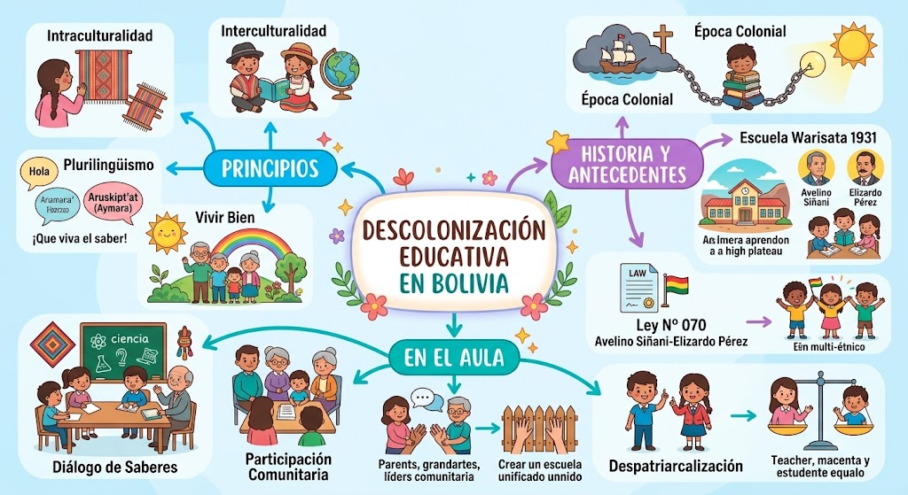

GALERÍA VISUAL
Explora los materiales visuales de nuestra investigación sobre la descolonización, sus principios y su aplicación en la educación.
Línea del tiempo
Un recorrido visual por algunos de los acontecimientos y procesos históricos relacionados con la descolonización y la transformación de la educación boliviana.

Línea del tiempo de la descolonización
Principales acontecimientos, antecedentes y transformaciones vinculadas con el proceso descolonizador.
Mapa conceptual
Representación visual de los conceptos, principios y relaciones fundamentales de la descolonización y su aplicación en el ámbito educativo.

Mapa conceptual
Síntesis gráfica de los principales conceptos relacionados con la descolonización y la educación.